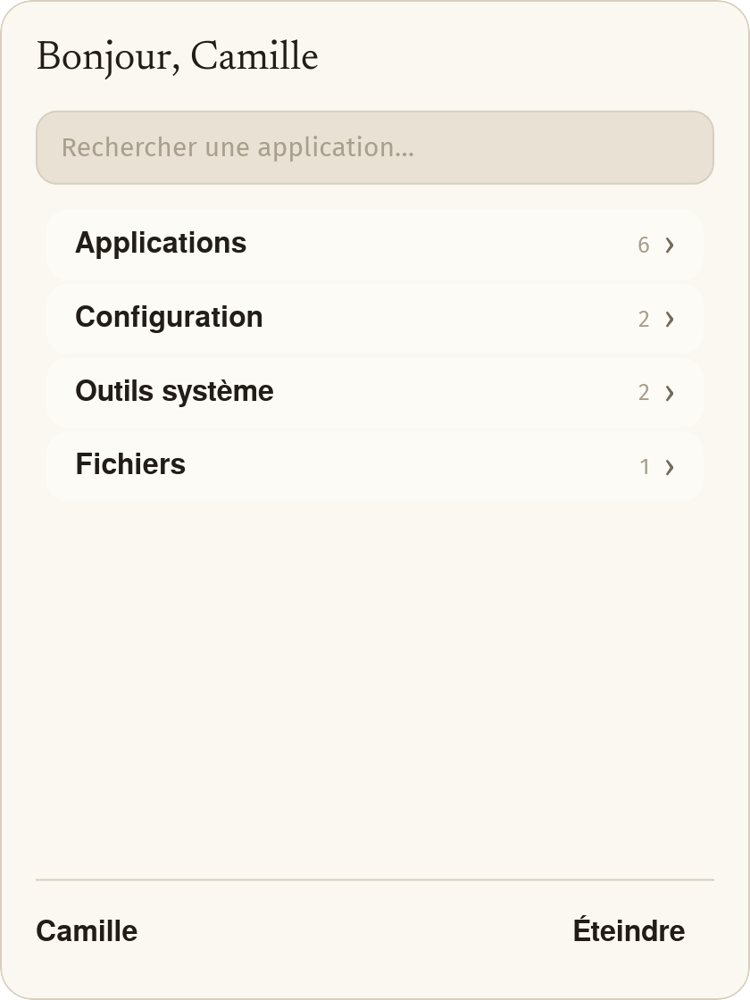
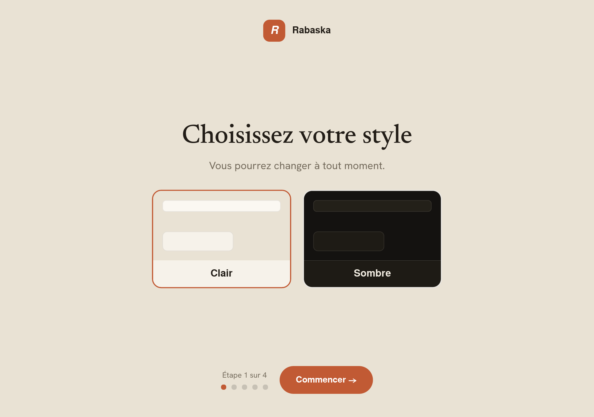
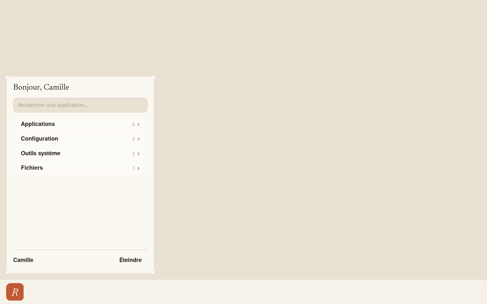

Système d’exploitation Installé avant la livraison
Rabaska OS remplace Windows sur des PC reconditionnés. Léger, en français, déjà installé. Vous allumez, vous répondez à quatre questions, vous êtes sur votre bureau.

Capture réelle du bureau. Cliquez le bouton R : le menu s’ouvre et se ferme, comme sur la machine.
Pas une application ajoutée à Windows. Rabaska OS remplace Windows : le bureau, le menu, les réglages, les mises à jour, tout.
Socle Lubuntu 26.04, famille Ubuntu, bureau LXQt. Un noyau connu, des correctifs de sécurité qui continuent d’arriver.
Aucune image à télécharger, aucune clé USB à graver, aucune commande à taper. Vous recevez un ordinateur qui fonctionne.
Visite guidée
Quatre écrans, dans l’ordre où vous les verrez. Ce sont des captures de la machine, pas des dessins.

Au tout premier démarrage, l’ordinateur pose quatre questions : le style (clair ou sombre), la taille du texte, les couleurs, le rythme. Chaque écran rappelle qu’on pourra changer plus tard. À la fin : « Tout est prêt », puis un bouton « Ouvrir mon bureau ».
Un clic ouvre le menu. En haut, un bonjour avec le prénom. Dessous, une recherche : on tape le début d’un nom, le programme apparaît. Sans chercher, tout est rangé en quatre familles : Applications, Configuration, Outils système, Fichiers. En bas à droite : Éteindre.

À côté du R, les cinq raccourcis du quotidien : l’assistant, Internet, les fichiers, les photos, le courriel. À droite : clair ou sombre, la langue, le Wi-Fi, le son, la batterie, l’heure. Rien d’autre. Le reste vit dans le menu.
Mises à jour
Un bouton « Tout mettre à jour ». Ou « Plus tard ».
Quand quelque chose est prêt, une notification le dit en français. La fenêtre range ce qui arrive en trois groupes : Sécurité, Rabaska OS, Applications et système. Un bouton fait le reste. On peut répondre « Plus tard ».
Ce qui est déjà installé
Les programmes du quotidien sont là, et ils portent des noms français dans le menu.
.exe. Beaucoup échouent — surtout les jeux et les gros logiciels.
Microsoft Edge n’est pas préinstallé : sa licence l’interdit. Un raccourci permet de l’installer soi-même. Les paquets snap d’Ubuntu sont retirés — Firefox et Chromium viennent des dépôts .deb officiels, plus rapides à démarrer sur une vieille machine.
Usage quotidien
Pour décider avant l’achat. Liste indicative du quotidien ; pour un cas précis, on vérifie avec vous.
Natif ou excellente expérience
Beaucoup de services vidéo s’utilisent dans le navigateur. Qualité et expérience selon le service et la machine — parc d’occasion, pas de 4K.
Incompatibles ou problématiques
Confort et accessibilité
On parle de confort, jamais de diagnostic. Aucune étiquette. Et tout se change plus tard, dans « Affichage et confort ».
Clair
Sombre
Le même bureau, deux ambiances. Un bouton dans la barre bascule d’un style à l’autre, n’importe quand.
Tout grossit ensemble : le menu, les fenêtres, les messages. Pas juste un zoom sur une partie de l’écran.
Trois vraies palettes, pas un filtre posé sur l’écran. Le style clair ou sombre reste indépendant.
Certaines personnes se fatiguent vite : moins d’animations, moins de choses à l’écran, des textes plus aérés. C’est une question de confort, pas une étiquette.
Lire l’écran à voix haute (Orca) et le clavier à l’écran restent à la demande — jamais imposés le premier jour. Sur un portable convertible 360°, le clavier à l’écran s’ouvre tout seul quand l’écran est replié.
Mises à jour et sécurité
La fenêtre range ce qui arrive en trois groupes, en français, avec le nombre de mises à jour de chacun.
Le socle Linux continue de recevoir les correctifs de la famille Ubuntu. Sans le canal du vendeur, la couche Rabaska n’évolue plus. Le notificateur d’origine de Lubuntu est encore présent : vous pouvez voir deux invitations pour un temps.
Le bouton Assistant ouvre Gemini dans une fenêtre du navigateur. Compte Google et internet requis. Aucune intelligence artificielle ne tourne sur votre machine.
Des dépôts .deb officiels (Ubuntu, Mozilla). Les paquets snap sont retirés. La couche Rabaska vient d’un seul canal : celui du vendeur.
Le chargeur d’amorçage signé n’est pas retouché. La machine démarre comme le constructeur l’a prévu.
Comparaison honnête
Nous ne dirons pas que c’est mieux partout. Voici les deux colonnes, côte à côte.
S’il vous faut un logiciel Windows précis, un jeu récent ou de la 4K : gardez Windows. On vous le dira avant la vente.
Fiche technique
Rabaska OS n’est pas un noyau inventé de zéro : c’est une couche fermée, posée sur un Linux connu. Voici l’empilement réel, tel qu’il est construit.
Image Lubuntu 26.04 (famille Ubuntu, 64 bits). Bureau LXQt, noyau Linux, installeur Calamares, écran de connexion SDDM, démarrage Plymouth. Secure Boot conservé.
Par défaut : LXQt sous Wayland, compositeur labwc (coins du haut arrondis, 12 px). Aucune ombre portée : le flou coûte trop cher sur un petit processeur. Repli : LXQt sous X11 avec Openbox.
Thème crème et terracotta, polices Hanken Grotesk et Newsreader. Menu Démarrer (recherche, quatre familles, Éteindre), assistant du premier jour, fenêtre de mises à jour en français, barre LXQt épinglée.
PC x86-64 reconditionnés. Cible de conception : peu de mémoire, disque déjà usé, processeur lent (classe AMD C-50 1 GHz, 2 Go). Au démarrage, un service ajuste l’ordonnanceur disque et la ZRAM. Pas ARM, pas Apple.
YouTube dans Chromium avec décodage matériel (VA-API) quand le GPU le permet. Spotify et beaucoup de services vidéo dans le navigateur. Qualité typique sur ce parc : environ 720p — pas de 4K.
Sur un convertible 360° qui signale le mode tablette au noyau, un clavier à l’écran (squeekboard) s’ouvre. Sur un portable ordinaire, rien de plus ne tourne — pas de clavier virtuel « au cas où ».
Les paquets snap d’Ubuntu sont retirés : Firefox et Chromium viennent de dépôts .deb. Une logithèque Linux (Discover) peut être présente ; ce n’est pas un magasin d’applications de téléphone.
Linux et les programmes du socle restent sous leurs licences d’origine (souvent GPL). Les polices du thème sont OFL. Gemini appartient à Google. La couche Rabaska — habillage, menu, assistant, mises à jour — est propriétaire.
Limites
La limite principale
Ce n’est pas 4K.
Écran, carte graphique, processeur : c’est un parc d’occasion. La vidéo tourne autour de 720p. Si vous cherchez une station 4K ou du jeu récent, ce n’est pas le bon produit — et nous le dirons.
Questions d’acheteur
Nous écrire
Dites-nous ce que la machine doit faire. On répond franchement, même quand la réponse est « non ».